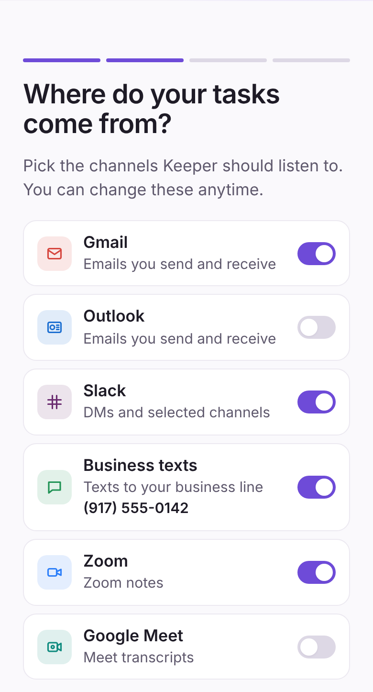
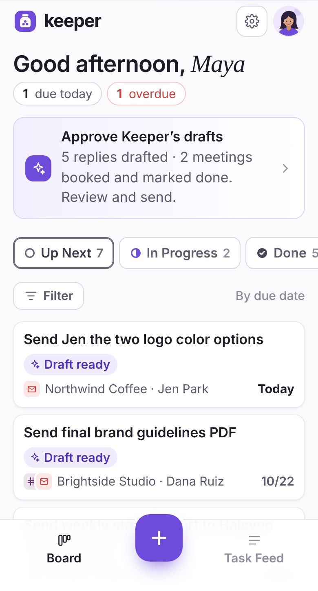
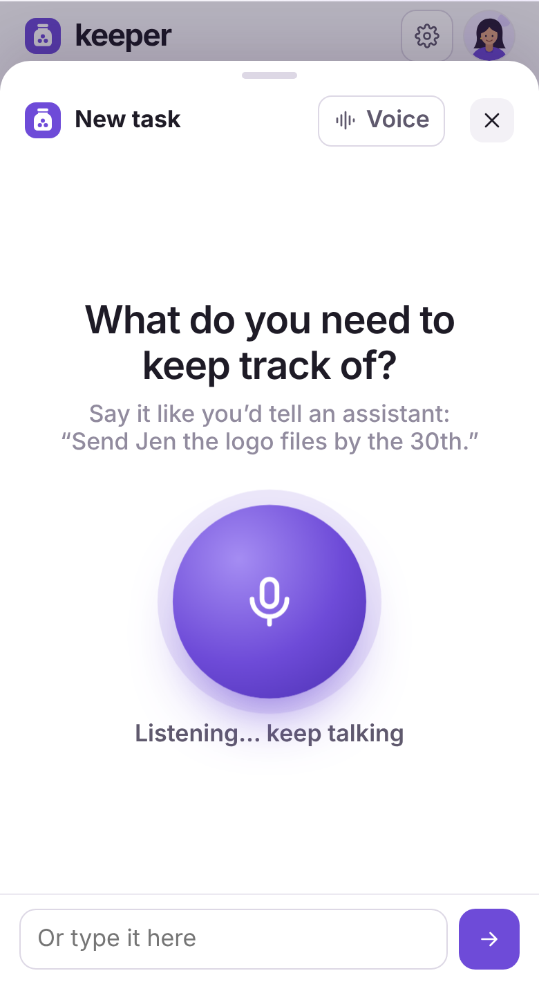
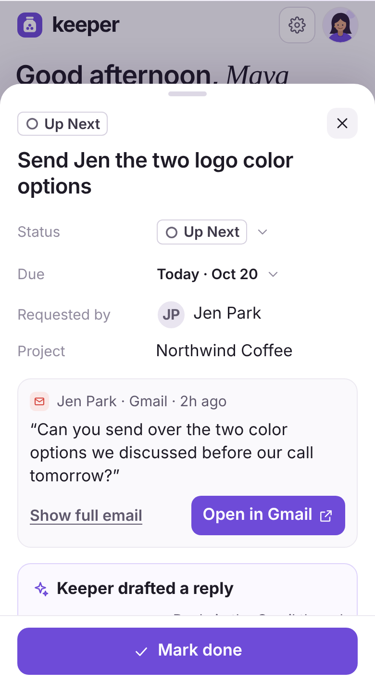
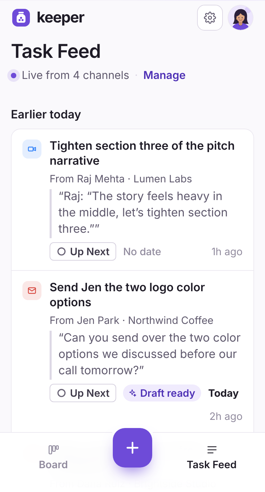
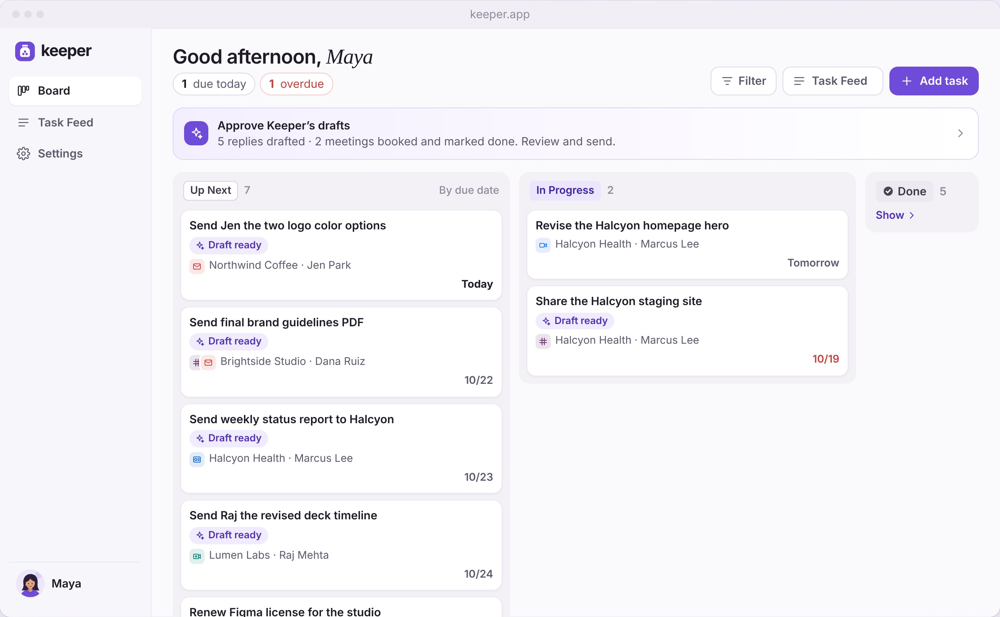

No data entry
You never add a task by hand unless you want to. Keeper hears “I’ll send that over Friday” and puts it on your board with the right client, date and source.
Keeper tracks every commitment you make across email, Slack, texts and calls, puts it on one simple board, and takes the simplest, repetitive tasks off your list. You’ll never type up a task again.
Connect your channels in about a minute. Your data is never used to train AI models.
Tracks your tasks across
Connect the channels your clients already use. Keeper finds the commitments in them and lines them up by due date.
You never add a task by hand unless you want to. Keeper hears “I’ll send that over Friday” and puts it on your board with the right client, date and source.
For routine work like “send the file” replies and finding a meeting time, Keeper drafts it or books it. You approve in one tap.
Between site visits? Say it out loud. Keeper asks only for what’s missing and reads the task back.
Your morning starts with one prioritized list: what’s due today, what’s overdue, and what’s already drafted for you.


Most task tools are built for a desk. Keeper is built for the car, the site visit and the five minutes between calls.




And a full board on desktop for when you’re back at your desk.
Keeper reads to find tasks. Everything else happens on your terms.
Note-takers catch meetings. Workspaces hold what you type. Keeper catches commitments everywhere, then helps with the routine ones.
Swipe to compare →
| What you need | KeeperEvery channel | Otter.aiMeeting notes | MotionAI calendar | NotionDocs and tasks | TodoistTask app |
|---|---|---|---|---|---|
| Finds tasks in email automatically | Yes | —No | PartialForward to add | PartialMail app, manual | —No |
| Finds tasks in Slack and texts | Yes | —No | —No | —No | —No |
| Finds tasks in calls and meetings | Yes | Yes | PartialMeeting notes | PartialMeeting notes | —No |
| No manual task entry needed | Yes | PartialCalls only | —No | —No | —No |
| Drafts routine replies for you | Yes | PartialRecap emails | —No | PartialWriting help | —No |
| Books meetings on your calendar | Yes | —No | Yes | PartialShares times | —No |
| Built mobile-first for solo operators | Yes | —No | —No | —No | PartialMobile app, manual |
Based on each product’s publicly listed features as of October 2026. Competitor tools change often.
“I’m sales, support and product. Customer emails and Slack DMs land on one list, and the easy replies are drafted before I open my laptop.”
“Five client Slacks, two inboxes, endless calls. This is the one place they all meet, and the drafted replies actually sound like me.”
“Clients text me at 10pm, email at 7am and grab me on site. I haven’t dropped a single request since I switched.”
“I haven’t typed up a to-do in two months. Brand deals, shoots and edits all show up on their own.”
“It booked three showings while I was driving between listings. The scheduling back-and-forth is just gone.”
Turn on the inboxes, workspaces and calls you use. Clients can text a business number so your personal one stays private.
Every commitment lands with its client, due date and a link to the original message. Add it or dismiss it.
For routine replies and scheduling, Keeper prepares a draft or a booking. Approve it in one tap, or let it handle those on its own.